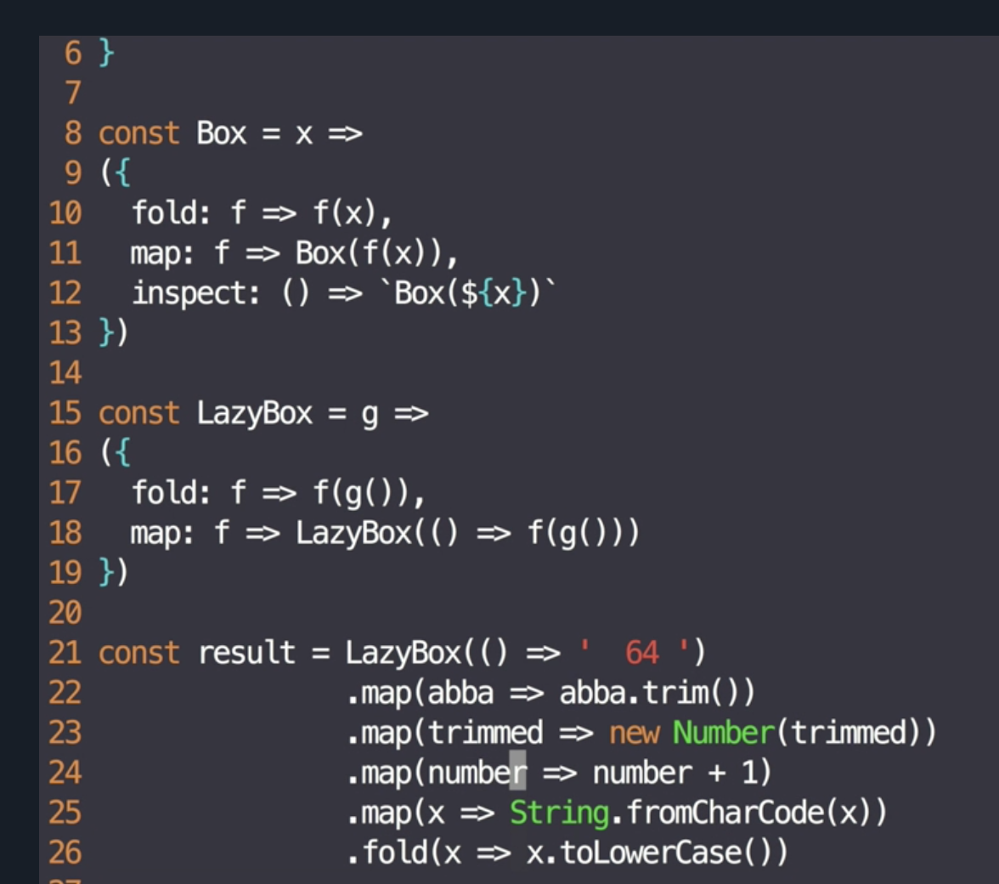
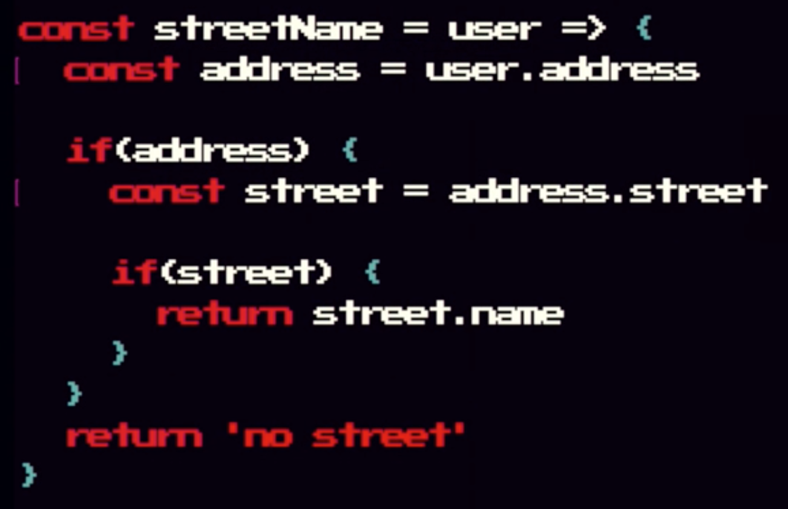
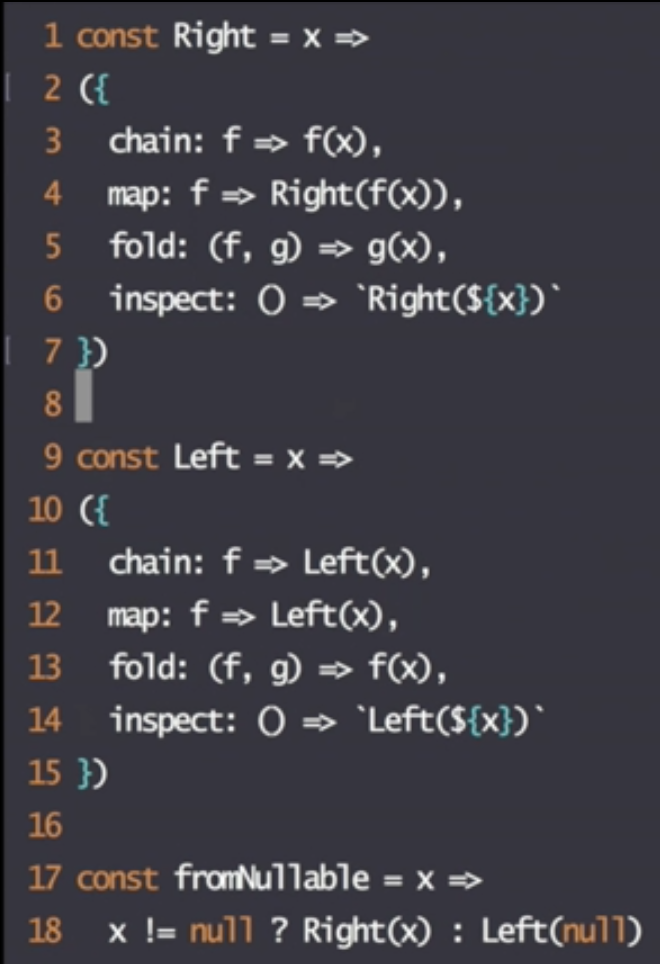
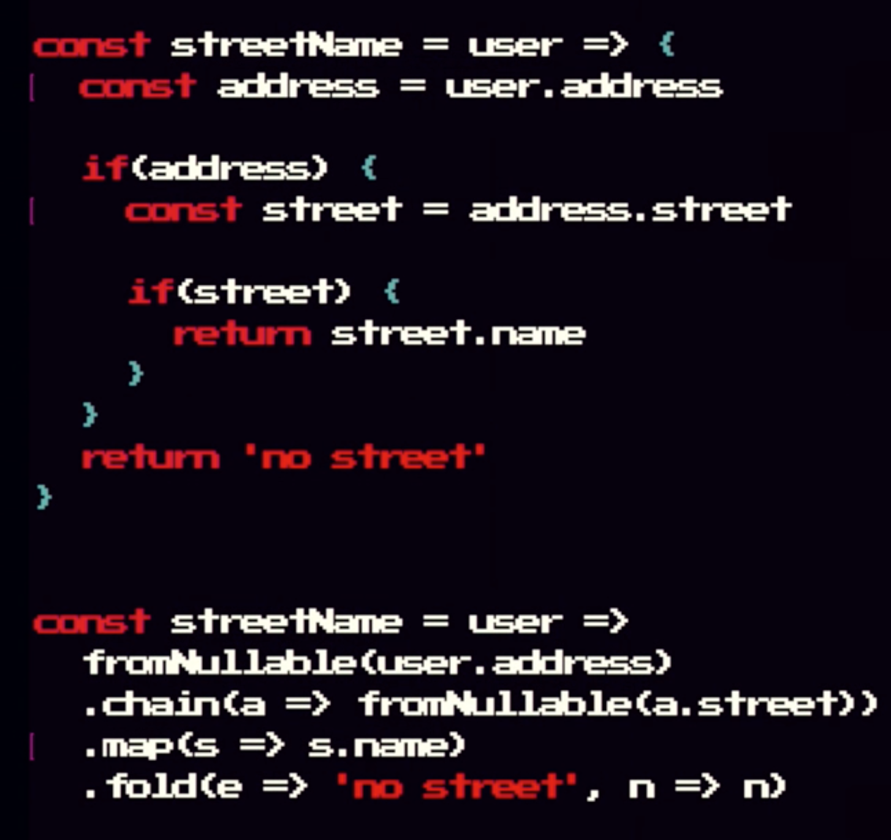
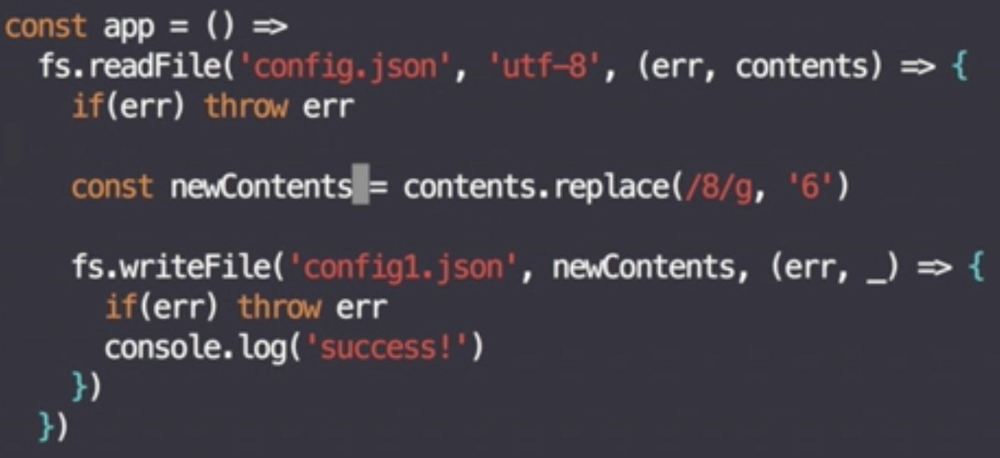
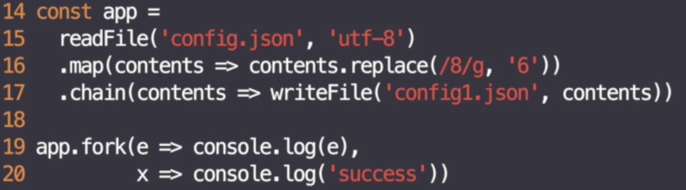

Functional Programming Fundamentals
Quinton Aiken, Laurel & Wolf, @quintonaiken
Agenda
OOP VS FP
Algebraic Side Tangent
Benefits of FP
Declarative VS Imperative Code
Point-Free Programming
Functional Composition
Functors and Monads (you're already using them)
OOP VS FP
NOT mutually exclusive.
NOT about objects vs functions.
The principles of software design still apply, regardless of your programming style, like the Single Responsibility Principle.
Every functional program ever written is composed of a set of functions that operate on data. Every OO program ever written is composed of a set of functions that operate on data. - Robert Cecil Martin
f(o) VS o.f()
This syntax difference alone is not meaningful.
OOP
OO imposes discipline about function pointers (where functions are defined). In OOP, functions are object methods that can be inherited (polymorphism).
Data and behavior in a single location - classes with properties (data) and methods (functions).
http://blog.cleancoder.com/uncle-bob/2014/11/24/FPvsOO.htmlFP
FP imposes discipline upon assignment (do not mutate state).
Functions are "first class". We can treat functions like any other data type. They can be stored in arrays, passed around as function parameters, assigned to variables, etc.
http://blog.cleancoder.com/uncle-bob/2014/11/24/FPvsOO.html https://drboolean.gitbooks.io/mostly-adequate-guideOOP Example
var Flock = function(n) {
this.seagulls = n;
};
Flock.prototype.conjoin = function(other) {
this.seagulls += other.seagulls;
return this;
};
Flock.prototype.breed = function(other) {
this.seagulls = this.seagulls * other.seagulls;
return this;
};
var flock_a = new Flock(4);
var flock_b = new Flock(2);
var flock_c = new Flock(0);
var result = flock_a // 4
.conjoin(flock_c) // 4
.breed(flock_b) // 8
.conjoin(flock_a.breed(flock_b)) // (16 + (8*2 = 16))
.seagulls; // 32
32!??
https://drboolean.gitbooks.io/mostly-adequate-guideFP Example
var add = function(x, y) { return x + y; };
var multiply = function(x, y) { return x * y; };
var flock_a = 4;
var flock_b = 2;
var flock_c = 0;
var result = add(
multiply(
flock_b,
add(flock_a, flock_c)
),
multiply(flock_a, flock_b)
); // 16
https://drboolean.gitbooks.io/mostly-adequate-guide
Algebraic Side Tangent
associative property - grouping of addends doesn't matter
add(add(x, y), z) === add(x, add(y, z));
commutative - order of addends doesn't matter
add(x, y) === add(y, x);
identity - adding zero doesn't do anything
add(x, 0) === x;
distributive - you can multiply a sum by multiplying each
addend separately and then add the products.
add(multiply(x, y), multiply(x, z)) === multiply(x, add(y,z));
Identity?
var flock_a = 4;
var flock_b = 2;
var flock_c = 0;
var result = add(
multiply(
flock_b,
add(flock_a, flock_c)
),
multiply(flock_a, flock_b)
); // 16
Distributive?
var flock_a = 4;
var flock_b = 2;
var flock_c = 0;
var result = add(
multiply(flock_b, flock_a),
multiply(flock_a, flock_b)
); // 16
Simplified
var flock_a = 4;
var flock_b = 2;
var flock_c = 0;
var result = multiply(
flock_b,
add(flock_a, flock_a)
); // 16
Benefits of FP
Deeply rooted in tried and true mathematical concepts
Enforces immutability which allows us to see our application's history.

Benefits of FP
Deeply rooted in tried and true mathematical concepts
Enforces immutability which allows us to see our application's history.
Minimal Side Effects - functions called with same input, give you the same output. Which leads to...
Cacheable Functions / Memoization
var squareNumber = memoize(function(x) {
return x * x;
});
squareNumber(4); // 16
squareNumber(4); // returns cache for input 4 (16)
https://drboolean.gitbooks.io/mostly-adequate-guide
Benefits of FP
Deeply rooted in tried and true mathematical concepts.
Enforces immutability which allows us to see our application's history.
Minimal Side Effects - functions called with same input, give you the same output. Which leads to...
Cacheable Functions / Memoization
Predictable and Testable Code - I/O Which leads to...
More readable and declarative code
Declarative Vs Imperative
Imperative: "Loop thru collection, check each item, if has email, add it to a results var"
Declarative: "Give me emails from a collection."
Imperative
function double (arr) {
let results = []
for (let i = 0; i < arr.length; i++){
results.push(arr[i] * 2)
}
return results
}
https://tylermcginnis.com/imperative-vs-declarative-programming/
Declarative
function double (arr) {
return arr.map((item) => item * 2)
}
https://tylermcginnis.com/imperative-vs-declarative-programming/
Declarative Benefits
Reads better, easier to see what is happening.
Less typing, less chance for mistakes/typos/bugs.
Remove needless variables / state (results var) Which leads to...
Point Free Programming!
Point Free Programming
var getServerStuff = function(callback) {
return ajaxCall(function(json) {
return callback(json);
});
};
var getServerStuff = function(callback) {
return ajaxCall(callback);
};
var getServerStuff = ajaxCall
https://drboolean.gitbooks.io/mostly-adequate-guide
Point Free Programming
httpGet('/post/2', function(json) {
return renderPost(json);
});
httpGet('/post/2', renderPost);
httpGet('/post/2', function(json, err) {
return renderPost(json, err);
});
https://drboolean.gitbooks.io/mostly-adequate-guide
Point Free Programming
var snakeCase = function(word) {
return word.toLowerCase().replace(/\s+/ig, '_');
};
Do we really care about the variable "word"?
var snakeCase = pipe(
toLowerCase,
replace(/\s+/ig, '_')
);
https://drboolean.gitbooks.io/mostly-adequate-guide
Benefits of Point Free Programming
Reduces "layers of indirection that provide no added value and only increase the amount of redundant code to maintain and search through."
Keep us concise and generic. "Pointfree is a good litmus test for functional code as it lets us know we've got small functions that take input to output." Which leads to...
Functional Composition!
(Quotes by Dr Boolean) https://drboolean.gitbooks.io/mostly-adequate-guideFunctional Composition
function getUserNames (res) {
var users = res.data.users || []
var userNames = []
for (var i = 0; i < users.length; i++) {
var userName = users[i].name
userNames.push(userName)
}
return userNames
}
const userNames = pipe(
path(['data','users']),
defaultTo([]),
pluck('name')
)(res)
Benefits of Functional Composition
linearity
less assignment, variables and state
easily extentable
Build new functions from other functions
Help build generic programs w/o data arguments
Functors / Monads
Functor - thing with a map method (arrays too!)
Monad - thing with a flatmap/chain/bind method
Functors
 https://egghead.io/courses/professor-frisby-introduces-composable-functional-javascriptFunctors
Map - less about iteration over something and more to do with composition in a context.
.map.map.map is the composition. the thing that is being mapped is the context (LazyBox(' 64 '))
Actual value is "wrapped" in our context.
LazyBox - no impure side-effects until the very end.
if LazyBox().map.map.map was a library, the maintainers could keep extending it and the consumer's application would remain pure until the consumer calls .fold!
https://egghead.io/courses/professor-frisby-introduces-composable-functional-javascriptFunctors
https://egghead.io/courses/professor-frisby-introduces-composable-functional-javascriptFunctors
In our LazyBox mapping, we always returned the actual value of interest.
What if map returned a functor?
Intead of LazyBox(5) we might get LazyBox(LazyBox(5))
hmm...
When would we do this though?
Uncaught TypeError: Cannot read property 'x' of undefined
Monads to the rescue!
https://egghead.io/courses/professor-frisby-introduces-composable-functional-javascriptMonads
 https://egghead.io/courses/professor-frisby-introduces-composable-functional-javascriptMonads
Must have a bind/flatMap/chain function which is able to pull the value (x) out from the the monad and put that value into another function (f) as an argument. (f should return a monad of the same type).
https://hackernoon.com/functional-computational-thinking-what-is-a-monad-2adea91154eMonads
 https://egghead.io/courses/professor-frisby-introduces-composable-functional-javascriptMonads
Imperative
https://egghead.io/courses/professor-frisby-introduces-composable-functional-javascriptMonads
Declarative
https://egghead.io/courses/professor-frisby-introduces-composable-functional-javascriptMonads
where have we seen this before?
Promises!
Promise.resolve(x)
// Promise(x)
.then(x => someAsyncFunc(x))
// Promise(Promise(y)) then === flatMap!
.then(y => console.log(y))
https://egghead.io/courses/professor-frisby-introduces-composable-functional-javascript
Monads
Allow us to use function composition and encapsulation to solve many programming problems like null checking and async flow.
Further Reading:
- https://drboolean.gitbooks.io/mostly-adequate-guide/
- https://github.com/fantasyland/fantasy-land